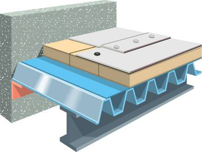
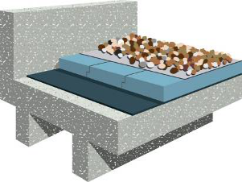

高分子卷材防水屋面系统
（一）钢结构柔性防水屋面系统


屋面基本构造层次由上至下依次为：
- TPO卷材或三元乙丙（EPDM）防水卷材 （≥1.2mm）
- 高强度岩棉板（≥80mm）或XPS保温板（≥60mm，B1级）
- PE隔气层（≥0.3mm）
- TB-36压型钢板(≥0.75mm)
特点：
- 系统组合可靠使用寿命不低于50年。（可靠使用寿命远远高于石油沥青类SBS和APP防水卷材）
- 保温性能优异、隔音、防火、无污染。
- 防水卷材和压型钢板的组合系统通过FM认证，TPO防水卷材通过LEED认证。
- 结构简单、自重轻，受力合理、造价低，结构形式多样、适应变形能力强、施工速度快。
（二）混凝土结构柔性防水屋面系统


屋面基本构造层次由上至下依次为：
- 细石混凝土保护层
- XPS保温板（≥50mm，B2级）
- TPO卷材或三元乙丙（EPDM）防水卷材 （≥1.2mm）
- 无纺布隔气层（≥200g/m2）
- 混凝土屋面
特点：
- 系统组合可靠使用寿命不低于50年。（可靠使用寿命远远高于石油沥青类SBS和APP防水卷材）
- 最适合于上人屋面以及气候恶劣的环境。
- 防火等级高。
- 耐候性能优异。
- 采用宽幅防水卷材，接缝少。
- 安装快捷，安装成本低。
- 可以适应各种不同的基层。
（三）柔性防水种植系统

屋面基本构造层次由上至下依次为：
- 植物
- 种植土（≥12cm）
- 无纺布隔气层（≥200g/m2）
- 排水板
- TPO或三元乙丙（EPDM）耐根穿刺防水卷材 （≥1.2mm）
- 普通防水卷材 （≥1.2mm）
- 混凝土结构层
特点：
- 系统组合可靠使用寿命不低于50年，延长屋顶或地下室使用寿命。（可靠使用寿命远远高于石油沥青类SBS和APP防水卷材）
- 防水卷材通过德国FLL以及北京市园林科学研究所的种植系统耐根穿刺试验测试。长期使用情况下，确保防水层不被植物根系破坏。
- 提升建筑品质与美观效果。
- 节能降耗。
- 简便安装和维护。
- 改善空气质量。
- 降低城市热岛效应。
- 生态洪水管理。
- 优异的降噪、保温功能。
- 鸟类与植物和谐自然的栖息之地。